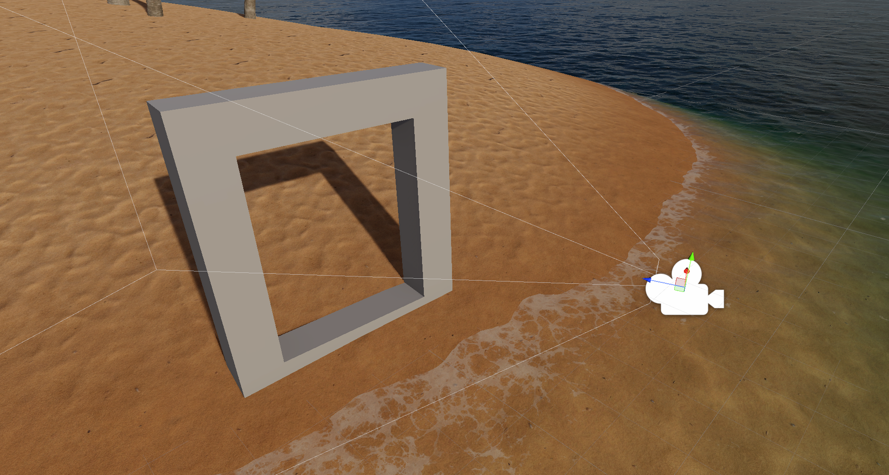
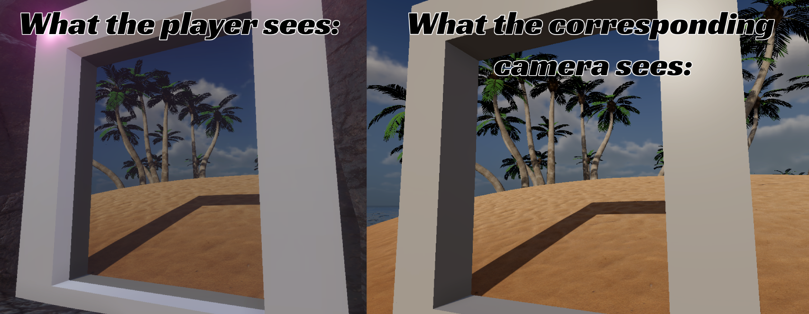
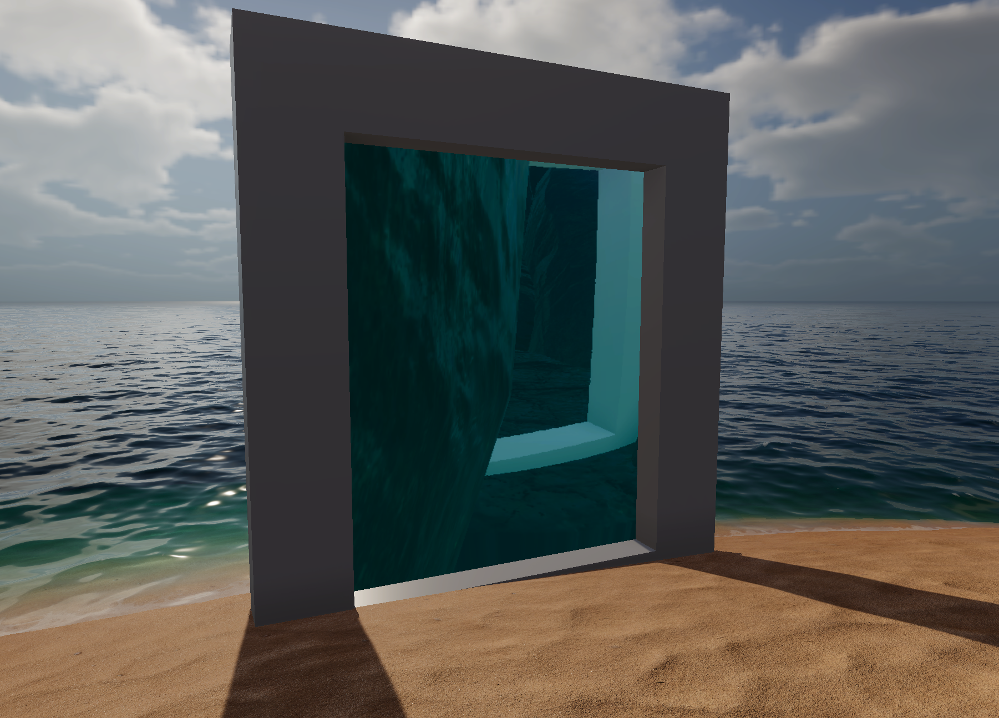

Project Overview
Project Overview
A shorter more experiment focused delve into cool 3D rendering effects that i wanted to learn. Moving about in the world lets you interact with things such as teleporting portals, swimming in water and a projecting crystal ball.
Me and my partner wanted to expand our knowledge deeper, about our specific expertise. Me as the programmer wanted to take a less player centered programming direction. We settled upon a small interactive enviroment set on a couple deserted islands.
My Contributions
With a primary focus on learning new techniques and putting my theoretical knowledge of computer rendering and linear algebra to the test. I focused on giving the world interesting things to interact and play around with.
Click on the topic you wish to learn more about
The portal is porbably the first thing that jumps out. It is meant to be a seamless way of traveling from one place to another instantly. The first part and most difficult part is rendering the enviroment on the other side of the portal.

The rendering of the other side is handled by a secondary camera. This camera pivots around the
exit portal, mirroring the position that the player has relative to the entrance portal.
By using each portals transform as a base for two coordinate systems we can use some simple matrix
multiplication to have the camera always be in the right position and rotation even if the portals
are pointing in some crazy directions.
This gets us a camera that can render from the right position and rotation, however we still need to cutout the only part of the screen that the portal will actually cover.
The cutout shader takes only the part that should be displayed and maps it onto the render texture. Then we apply the texture to the player side portal.
The finished result acts like a window to another place in the world. And with teleport functionality it acts more like a doorway to that place.
The portal could have been worked upon a lot more. As in, there are many visual artifacts that can pop up.

One of the biggest artifacts that can be observed is when the camera on the other side of the portal
are behind some objects and the rendering of those objects obscure the portal.
I am not alone with this problem. Because in retrospect, i have researched the topic. Finding a video that outlines that
Valve, the makers of the portal games, has had simliar issues. They talk about the creation of
the portals and this specific issue In this Youtube Video.
The portals in my prototype are very similar in function to the portals they created. The problem i
am encountering is a phenomenom they have coined as BANANA JUICE.
The solution they had was to project a plane with the forward vector of the portal as the normal. Then
culling everything that was behind the plane for that camera.
While i have not yet fixed this issue, i am certain that the solution used by valve can work well and can be adapted to my implementation of portals.